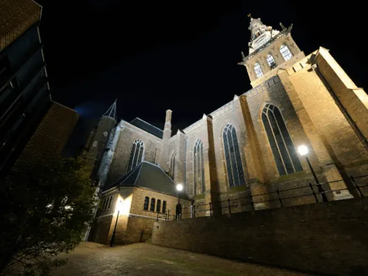

Gids
Het centrum van Nijmegen
Bijgewerkt op
In het kort: Het centrum van Nijmegen is compact: van het station loop je in een kwartier naar de Grote Markt en van daar in vijf minuten naar de Waalkade. Deze gids zet de pleinen en de Stevenskerk, de plekken aan de Waal, de winkelstraten, markten en openingstijden, en het parkeren in de binnenstad op een rij.
Het centrum van Nijmegen ligt op de heuvel boven de Waal, tussen het station en de rivier. Het is compact: van het Stationsplein loop je in een kwartier naar de Grote Markt, en vandaar ben je in vijf minuten op de Waalkade. Onderweg kom je langs de Stevenskerk, de winkelstraten en de pleinen die elk hun eigen verhaal hebben, van het bombardement van 1944 tot de Romeinse vondsten onder het Kelfkensbos.
In deze gids staan de pleinen, straten en plekken aan de Waal op een rij, met de openingstijden van de winkels, de markten en de handigste plekken om te parkeren.
Pleinen en kerk
Vier plekken vormen het hart van de binnenstad: de Grote Markt met de Waag en de Stevenskerk, Plein 1944 dat na het bombardement ontstond, het Kelfkensbos bij het Valkhof en de kerk zelf, al bijna acht eeuwen het hoogste punt van de stad.

De Grote Markt in Nijmegen
De Grote Markt in Nijmegen: de Waag uit 1612, de Kerkboog naar de Stevenskerk, Mariken, de terrassen, de markt, de Vierdaagsefeesten en de kermis. Met…

Plein 1944 in Nijmegen
Plein 1944 in het centrum van Nijmegen: hoe het plein na het bombardement ontstond, de herinrichting van 2013, parkeren, de fietsenstalling en de…

Het Kelfkensbos in Nijmegen
Het Kelfkensbos in Nijmegen: het plein voor het Valkhof Museum, de parkeergarage (ingang Voerweg 2), de Godenpijler, het Hunnerpark en de evenementen.
De Stevenskerk in Nijmegen
Bezoek de Stevenskerk in Nijmegen: openingstijden, de Stevenstoren beklimmen (tijden en prijs), het König-orgel, de geschiedenis en waar je parkeert.
Aan de Waal
Beneden aan de rivier liggen de Waalkade met zijn terrassen, het Valkhofpark met de Sint-Nicolaaskapel en de Waalbrug uit 1936. De mooiste fotospots van de stad vind je hier.

De Waalkade in Nijmegen
De Waalkade in Nijmegen: terrassen aan de Waal, Museum De Bastei en Velorama, de Vierdaagsefeesten, de Waalbrug uit 1936, hoogwater en parkeren.
Valkhof en Hunnerpark in Nijmegen
Alles over het Valkhof in Nijmegen: het vernieuwde Valkhof Museum (tijden en prijzen), het Valkhofpark met de Sint-Nicolaaskapel, het Hunnerpark en de…
De Waalbrug in Nijmegen
Alles over de Waalbrug in Nijmegen: de bouw in 1936, het opblazen in 1940, de verovering in september 1944, de renovatie en hoe je over de brug naar…
De beste fotospots in Nijmegen
Op zoek naar de perfecte foto? Dit zijn de mooiste fotospots in Nijmegen, van de Ooijpolder en de skyline tot het Besiendershuis en Kronenburgpark.
Winkelen, markten en openingstijden
De winkels in het centrum zijn ook op zondag open, en op maandag en zaterdag staat de weekmarkt in de binnenstad. Hieronder de openingstijden, de markten en tips van een Nijmegenaar.

Openingstijden centrum Nijmegen
Ontdek het bruisende centrum van Nijmegen met zijn historische gebouwen, gezellige winkels en vele restaurants en cafés.

Markten in en om Nijmegen
Wist je dat er bijna elke dag wel een markt is in Nijmegen of omgeving? Op deze pagina staan alle markten op een rij

Wat te doen in Nijmegen
Wat te doen in Nijmegen? De mooiste bezienswaardigheden, musea, parken en natuur, tips bij slecht weer en de evenementen door het jaar.

Ontdek Nijmegen door de ogen van een local
De favoriete plekken van een Nijmegenaar: verborgen pareltjes, gezellige straatjes en tips die je niet in de reisgids vindt.
Parkeren en bereikbaarheid
Met de trein stap je uit aan de rand van het centrum. Met de auto parkeer je in een van de garages onder de binnenstad, of goedkoper op een P+R buiten de stad.

Parkeren in Nijmegen
Parkeren in Nijmegen: alle parkeergarages in het centrum, tarieven op straat, de P+R en waar je gratis of goedkoop parkeert. Bijgewerkt voor 2026.
Station Nijmegen
Alles over station Nijmegen: welke treinen er stoppen, de verbouwing tot 2028 met nieuw perron en westentree, fietsenstallingen, parkeren en de weg…
Parkeergarage Kelfkensbos
Parkeergarage Kelfkensbos bij Museum Het Valkhof: ingang Voerweg 2, 600 plaatsen. Openingstijden, tarief (€ 3,90 per uur, 's avonds € 0,50) en tips.
Parkeergarage Mariënburg
Parkeergarage Mariënburg ligt midden in het centrum, bij LUX. Adres Arsenaalgas 8, openingstijden, tarief (€ 3,90 per uur, 's avonds € 0,50) en hoogte…
Andere gidsen: zien en doen
Veelgestelde vragen
Wat is het centrale plein van Nijmegen?
De Grote Markt, met de Waag uit 1612 en de Stevenskerk erachter. Plein 1944 is het grootste plein en ontstond na het bombardement van 22 februari 1944.
Hoe ver is het van station Nijmegen naar het centrum?
Het station ligt aan de westrand van het centrum. Lopend ben je in een kwartier op de Grote Markt.
Zijn de winkels in het centrum van Nijmegen op zondag open?
Ja, de meeste winkels in de binnenstad zijn elke zondag open, meestal van 12.00 tot 17.00 uur. Kijk voor de precieze tijden bij de openingstijden van het centrum.
Waar parkeer je in het centrum van Nijmegen?
In de garages Keizer Karel, Kelfkensbos, Mariënburg en Eiermarkt, voor € 3,90 per uur overdag. Goedkoper is P+R Nijmegen Noord, € 3,50 per dag inclusief de bus naar het centrum.